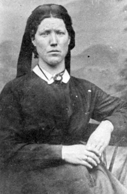

|
Martha Stephens was born 12 October 1806 in Davidson County, North Carolina [Salisbury, Rowan County, North Carolina]. She was the third child, second daughter, of Alexander Stephens and Mary (Polly) Dailey or Daley. Alexander Stephens was born in Hillsborough, Chatham County, North Carolina in 1775 as the son of Richard Stephens and Martha Ann Roberts [or Robards]. Mary Dailey was born on the 19 November 1778 in Rowan County, North Carolina, to William Dailey (1750-1840) [from Ireland] and Mary Palmer (1757-1819) .
Alexander and Mary were married in Rowan County, North Carolina . They were members of the Baptist Church all their lives. They raised a family of eleven children. After Alexander's death February 2, 1834 in Salisbury, Rowan County, North Carolina, Mary Dailey Stephens married (2) George Naught or Knaught or Knott on April 1, 1841.
|
Daniel Brown 1804-1875
Brother of Captain James Brown
Husband of Elizabeth Stephens
| 
Elizabeth Stephens Brown
1809-1890
Sister of Martha Stephens Brown
|
Martha Stephens married Captain James Brown on March 2, 1823. in Flat Swamp, Rowan County, North Carolina the marriage was performed by Ranson Harris.
Martha has the distinction of being the wife of James Brown's youth and helping in his ambitious business undertakings. Martha bore him eight sons, and one daughter, all living to adult age, except one, marrying and rearing large families, all of them a credit to her. Most of her children resembled her in physique and inherited her evident calmness and contented outlook on life.
When her last son, Moroni, was born in her thirty-fourth year, she passed away on the 28th day of Septmber 1849 in Kingston, Adams County, Illinois. She had received the Gospel when her husband did, as also did her brother and other of the Stephens family, who later came to Utah and settled in Ogden. Her sister, Elizabeth Stephens, who married James Brown's brother Daniel Brown, also came to Utah and lived to a good old age and died and were buried in Ogden, Weber, Utah
.
Children of Captain James Brown and Martha Stephens:
1. John Martin Brown, born 29 June 1824, at Flat Creek Swamp, Davidson County, North Carolina. He married four wives: Ann Foutz, Lovina Wilson, Louisa Wilson, and Almeda Daley Wilson. He died 13 Oct. 1888.
2. Alexander Brown, born 3 March 1826, at Flat Creek Swamp, Davidson County, North Carolina. He married Amanda McMurty. He died 22 April 1910.
3. Jesse Sowell Brown, born 26 March 1829, at Flat Creek Swamp, Davidson County, North Carolina. He married Caroline Stewart. He died 29 January 1905.
4. Nancy Brown Davis Sanford, born 27 December 1830, at Flat Creek Swamp, Davidson County, North Carolina. She married Eleazer Davis, later divorced. Then married Price Sanford. Nancy died February 12, 1895 in Iowa, she is buried in the Ogden City Cemetery, Utah.
5. Daniel Brown, born 7 December 1832, at Flat Creek Swamp, Davidson County, North Carolina. He died in Ogden, Weber, Utah in1864, unmarried.
6. James Morehead Brown, born 17 November 1834, at Versailles, Brown County, Illinois. He married Adelaid Exervid/Exervia. He died 26 December 1924.
7. William Brown, born 21 August 1836, at Beverly, Adams County, Illinois. He married Mary Elizabeth Bybee. He died 19 October 1904.
8. Benjamin Franklin Brown, born 9 May 1838, at Beverly, Adams County, Illinois. He married Susan A. Wright. He died 24 December 1863.
9. Moroni Brown, born 25 September 1840, at Beverly, Adams County, Illinois. He married Evaline Cindralla Conover and Frances Mariah Porter. He died 14 August 1916.
Ten Sons of Captain James Brown and his brother Daniel Brown
Back Row: Moroni Brown [1840], Wilson Brown [1830, son of Daniel], William Brown [1836], Willis Brown [1834, son of Daniel], James Morehead Brown [1834], William Brown [1824, son of Daniel], Jesse Sowell Brown [1828].
Seated: John Martin Brown [1824], James Stephens Brown [1828, son of Daniel], Alexander Brown [1826].
Sources:
PAF - Archer files = Captain James Brown + (1) Martha Stephens < dau of Alexander Stephens and Mary Daley.
PAF - Archer files = Captain James Brown + (7) Phebe Abigail Abbott > Orson Pratt Brown
See: The Stephens' Family Ancestral Line
Stalwarts of Mormonism
Story on James Brown in the Ogden Standard Examiner, 31 AUG 1970
http://www.bowlbyfamily.org/ancestor/d19493.htm
http://www.vangundy.net/familytree/index.htm
http://www.brownhistory.org/CJBWives_Children.htm#Wiscombe's CJB Wives By Erold C. Wiscombe
Book of Remembrance written by Hattie Critchlow Jensen and Louella Brown Tanner prior to 1948
Picture of Ten Sons of Captain James Brown and Daniel Brown was contributed by Erold Clark Wiscombe.
Copyright 2001 www.orsonprattbrown.com
|